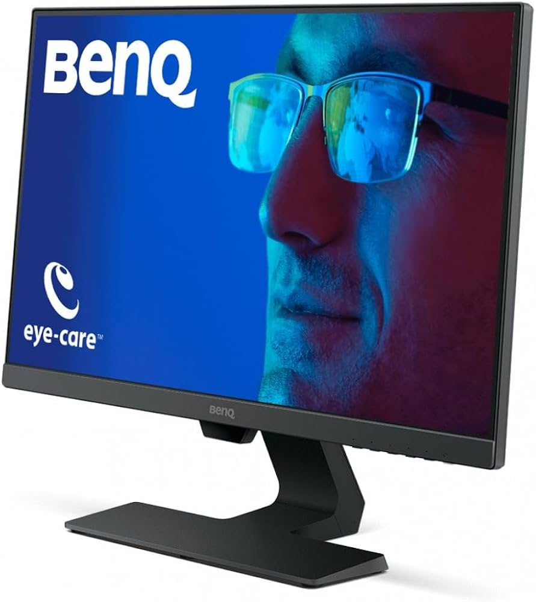

BenQ PD2705U 27" LED IPS UltraHD 4K
En la misma gama que el monitor anterior tenemos el BenQ PD2705U, otro monitor de 27 pulgadas con resolución 4K ideal para programadores. Este modelo destaca por cubrir el 100 % del sRGB, ofrecer una coherencia de color de Delta E inferior a 3 y conectarse a través de USB-C. Esto garantiza una representación precisa de los colores, lo cual es especialmente útil para desarrolladores que también trabajan con diseño o interfaces gráficas. Muchos compradores comparan su calidad con la pantalla de los iMac, reconocidos mundialmente por este motivo.
- Diagonal de la pantalla: 60,5 cm (23.8")
- Brillo de la pantalla (típico): 250 cd / m²
- Resolución de la pantalla: FullHD 1920 x 1080 Píxeles
- Tiempo de respuesta: 5 ms
- Tecnología de visualización: LED
- Tipo de pantalla: IPS
- Número de colores de la pantalla: 16,78 millones de colores
- Relación de aspecto nativa: 16:9
- Tamaño de pixel: 0,274 x 0,274 mm
- Densidad del pixel: 93 ppp
- Puertos e Interfaces
BenQ PD2705U 27" LED IPS UltraHD 4K

Bajando un poco de presupuesto, y, por lo tanto, también el nivel, te recomiendo el monitor curvo MSI G27C4X. Aunque está diseñado principalmente para gaming, sus características lo hacen también muy adecuado para programación.
BenQ PD2705U 27" LED IPS UltraHD 4K

Volviendo a los monitores de alta gama, otra de los más recomendados por los programadores es el ASUS ROG Strix XG27UCS. Este monitor de 27 pulgadas ofrece una resolución 4K UHD (3840 x 2160) con un panel IPS que garantiza colores precisos y ángulos de visión amplios.
- Diagonal de la pantalla: 68,6 cm (27")
- Resolución de la pantalla: 3840 x 2160 Pixeles
- Tipo HD: 4K Ultra HD
- Tipo de pantalla: Fast IPS
- Retroiluminación LED: Si
- Tiempo de respuesta: 1 ms
- Razón de contraste (típica): 1000:1
- Máxima velocidad de actualización: 160 Hz
- Ángulo de visión, horizontal: 178°
- Ángulo de visión, vertical: 178°
- Número de colores de la pantalla: 1,073 billones de colores
- Tamaño de pixel: 0,155 x 0,155 mm
- Tecnología HDR (High Dynamic Range, Alto rango dinámico): DisplayHDR 400
- Cobertura sRGB (típica): 130%